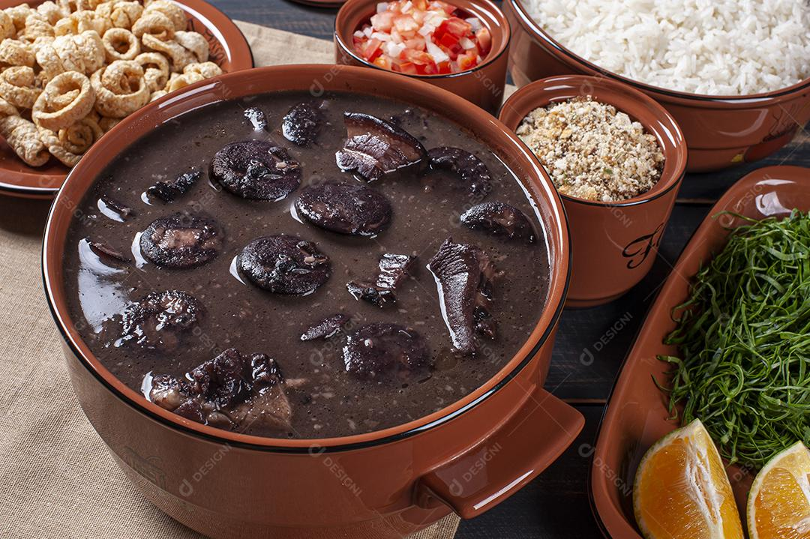

Feijoada

Descrição
A feijoada é um prato tradicional brasileiro, especialmente popular no Rio de Janeiro. É uma refeição rica e saborosa, perfeita para reunir amigos e família em um almoço especial. Feita com feijão preto, carnes variadas e acompanhamentos como arroz, farofa e couve, a feijoada é um símbolo da culinária brasileira.
Esta receita é ideal para ocasiões especiais, como festas e celebrações, e pode ser adaptada com diferentes tipos de carnes, dependendo da sua preferência. Confira como preparar uma deliciosa feijoada!
Ingredientes
- 500g de feijão preto
- 200g de carne seca
- 200g de costela de porco
- 150g de linguiça calabresa
- 150g de paio
- 1 cebola grande picada
- 4 dentes de alho picados
- 2 folhas de louro
- Sal a gosto
- Pimenta-do-reino a gosto
- Água suficiente para cozinhar
- Arroz branco (para acompanhar)
- Farofa (para acompanhar)
- Couve refogada (para acompanhar)
Modo de Preparo
- Deixe o feijão preto de molho por pelo menos 8 horas antes de cozinhar.
- Em uma panela grande, coloque o feijão com água suficiente para cobrir e leve ao fogo médio.
- Adicione as folhas de louro e cozinhe por cerca de 1 hora ou até que o feijão esteja macio.
- Enquanto isso, em outra panela, refogue a cebola e o alho até dourarem.
- Adicione as carnes (carne seca, costela, linguiça e paio) à panela com a cebola e o alho. Cozinhe até que as carnes estejam bem douradas.
- Transfira as carnes para a panela do feijão e misture bem. Cozinhe por mais 30 minutos, ajustando o sal e a pimenta-do-reino a gosto.
- Sirva a feijoada quente, acompanhada de arroz branco, farofa e couve refogada.
Informações Adicionais
Tempo de preparo: 30 minutos (mais o tempo de molho do feijão)
Rendimento: 6 porções
Home